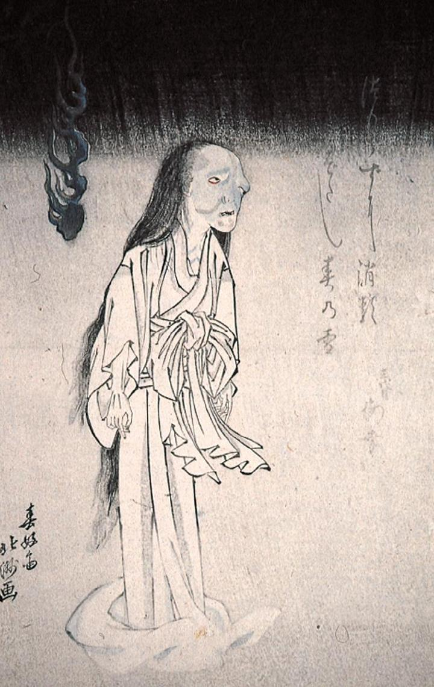

恨めしそうに立つ女の幽霊。白装束で足が見えない。顔が醜く歪み、背後には怪火が浮かんでいる。
著作者：春好斎北洲／出典：親書誌：M80_naprstek_0014：（役者絵；ヤクシャエ）／日付：2011／資源識別子：M80_naprstek_0014_0001_0000
Copyright (c)2010- International Research Center for Japanese Studies, Kyoto, Japan. All rights reserved.